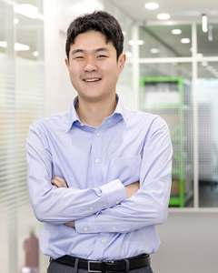

Han Sol Jung, Ph.D. · 정한솔
선임연구원 · 한국화학연구원
공정시스템연구센터Senior Researcher · KRICT
Process Systems Research Center
공정시스템연구센터Senior Researcher · KRICT
Process Systems Research Center
플랜트 BOP·에너지 시스템 연구 · 시스템 통합 · 원천기술의 플랜트 적용·설계·운전 판단Plant BOP & Energy Systems Engineering · System Integration · Technology Translation & Engineering Decision-Making